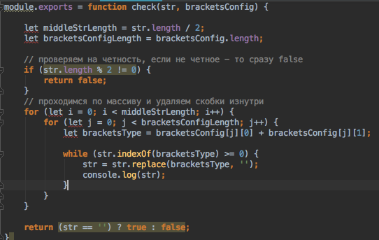
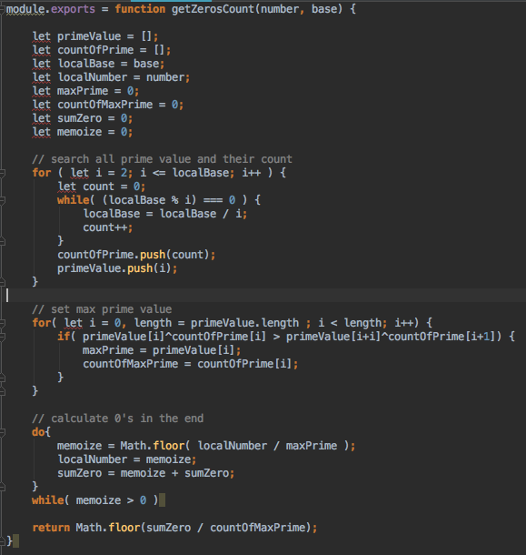

JUNIOR JAVASCRIPT DEVELOPER
I'm from Soligorsk. At 2008 I've graduated high school and enrolled to BSUIR. At the Telecommunication Faculty. It was so excited time. I've learned many interesting subject. For example: Computer Network, Microsystems and Electronic, and some Theory of Computer Science. When I graduated in 2013 I had my first job at the Belarussian Telcomunication company, named Beltelecom. That good company for more earlier people. But not for me. I want work in more Profitable, Professionally company's.
- blind type
- reading and listening in English
- get fast research
- great desire to learn
- Task of this code was find out check, correct or not sequence of brackets
- Task of this code was find zero at the end factorials
